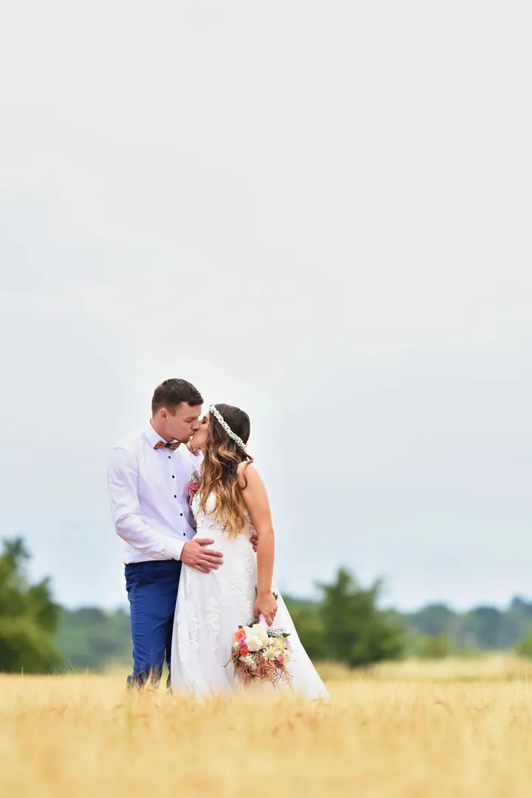
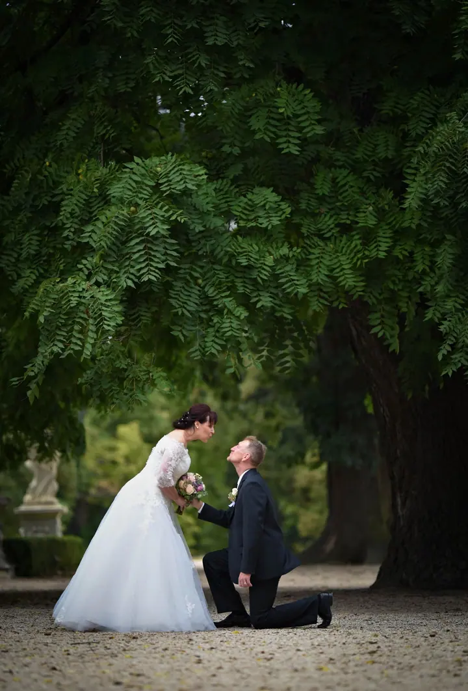
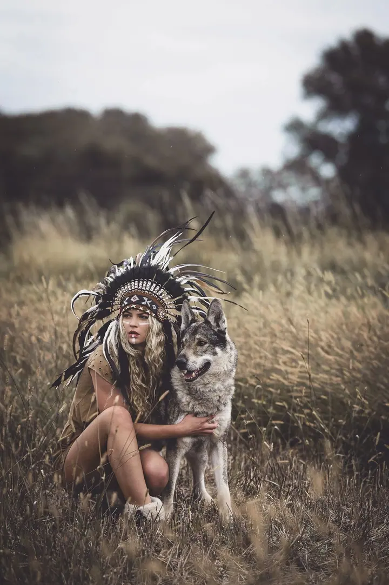
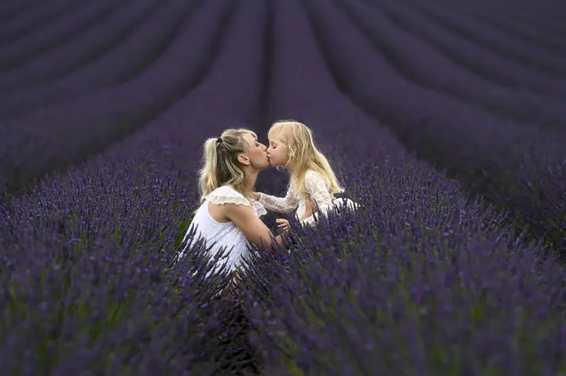

jedna
Focení svateb
Svatbu nafotím od ranních příprav až po večerní zábavu, ale vše se dá domluvit individuálně podle vašich přání. Nabízím i předsvatební schůzku nebo předsvatební focení.

Svatební, portrétní a rodinná fotografka · Brno, Vysočina, celá ČR

Jmenuji se Lucie Vaněčková a podepisuji se jako Vanda. Fotím svatby od ranních příprav po večerní zábavu, rodiny s dětmi i těhotné maminky. Nejraději venku, ale mám i vlastní vybavený ateliér v Brně.
Více o mně
Co fotím
jedna
Svatbu nafotím od ranních příprav až po večerní zábavu, ale vše se dá domluvit individuálně podle vašich přání. Nabízím i předsvatební schůzku nebo předsvatební focení.
dvě
Rodiny s dětmi fotím po celý rok, v ateliéru se zahradou nebo venku na poli, louce či v lese. Dělám i tematická mini focení.
tři
Focení těhotných žen patří k mým oblíbeným tématům. K zapůjčení mám spoustu šatů a sukní přímo na těhotenské focení.
Ve vlastním ateliéru určeném na boudoir fotím ženy každého věku. Součástí je práce vizážistky, vlasy i make-up.
Nejraději fotím venku, ale mám i vybavený ateliér.

Za objektivem
Pocházím z Vysočiny, ale teď působím v Brně, kde jsem si splnila sen a založila vlastní ateliér se zahradou. K focení lidí jsem se dostala postupně, přes krajinky a detaily. Dnes mě nejvíc baví portréty, rodiny s dětmi a tematická focení.
Jsem přátelský, společenský a veselý člověk, a proto mě tahle práce tak baví. Při focení potkávám pořád nové lidi a jejich příběhy, které pak zaznamenávám na fotografiích. Už několik let fotím i svatby a jezdím za vámi po celé republice.
Nemusíte řešit, co si vzít na sebe. Mám obrovský šatník se šaty, sukněmi, prádlem, botami a doplňky, k tomu lavičky a postýlky pro dětské focení. Prošla jsem několika kurzy líčení a spolupracuji s profesionálními vizážistkami, takže vše zajistím a domluvím.
Lucie
Ozvěte se přes formulář nebo telefonem. Ceník svateb vám pošlu na vyžádání, ostatní ceny najdete na webu.
Před svatbou se můžeme potkat na předsvatební schůzce nebo rovnou na předsvatebním focení. U portrétů spolu vybereme místo, téma a oblečení z mého šatníku.
Fotíme venku nebo v mém ateliéru v Brně. Když budete chtít, postará se o vaši vizáž profesionální vizážistka.
Svatební fotky dostanete upravené do měsíce a půl v dárkovém balení na flash disku, k tomu 30 tištěných fotografií 13×19 cm. Z portrétního focení vám pošlu 10 upravených fotografií podle vašeho výběru.
Portfolio
Otázky
Ano, jezdím po celé ČR. Doprava na svatbu v Brně a okolí je zdarma, mimo Brno počítám 10 Kč/km jednosměrně.
Portrét nebo rodinné focení stojí 3 800 Kč, s vizáží od profesionální vizážistky 4 600 Kč. V ceně je 1–2 hodiny focení a 10 upravených fotografií, každá další stojí 150 Kč. Svatby začínají od 9 000 Kč a přesnou cenu domlouváme individuálně.
Nic si nemusíte kupovat. Zapůjčení šatů, sukní, prádla, bot a doplňků je součástí balíčku a můj šatník je opravdu velký.
Neupravené fotky neposkytuji. Vždy dostanete pečlivě upravené fotografie, které si sami vyberete.